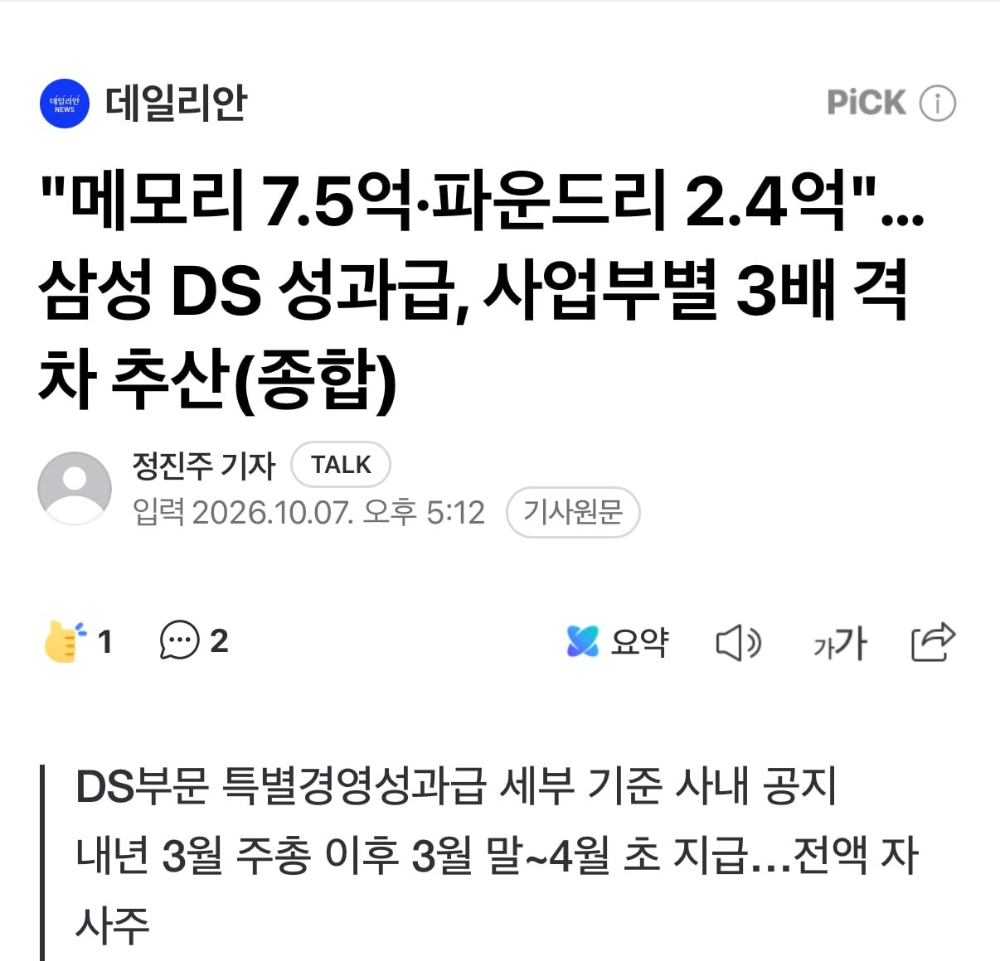
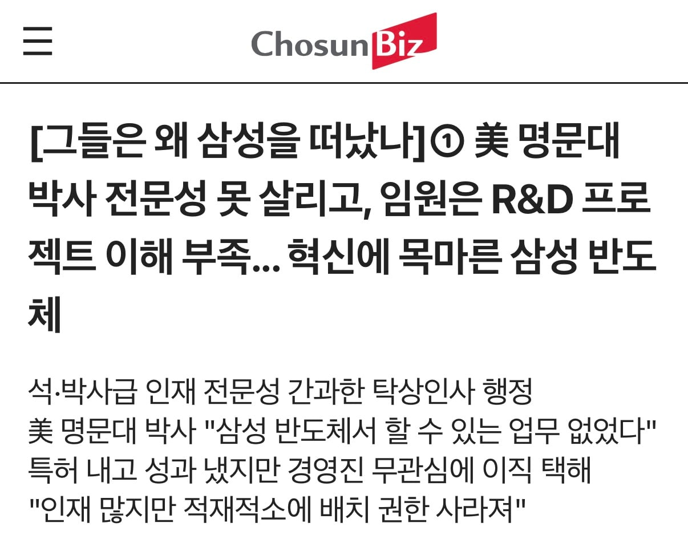
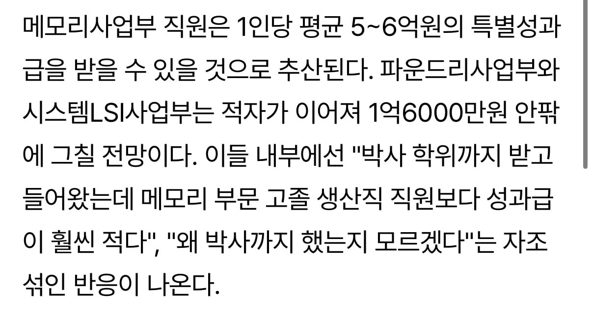

1. 성과급의 규모 :
하이닉스 영업이익의 10%, 삼전 11%로 지나치게 많다. 미국의 엔비디아는 퍼센트가 고정되어 있지 않으며 대략 5% 정도를 성과급으로 지출하고 있다.
2. N빵식 성과급, 개인성과와는 아무 관련없음 :
원래 성과급은 공과에 대해 보상을 하고, 직원들 간의 경쟁 및 경쟁력을 높이기 위해서이다.
엔비디아는 박사급 뛰어난 핵심인재에게는 수십억원을 보상하지만, 고졸 초대졸급 일반 노동자에겐 수천만원만 딱 보상하고 그친다. (대부분 주식보상, 삼하는 가급적 현금으로 내놓으라고 함 )
그러나 삼전닉스의 성과급은 직원들끼리 N빵하는 나눠먹기로, 그런 효과가 거의 없음... 일례로 예비군 직장중대장도 반도체 인재로 저 어마어마한 성과급을 받게 된다고..
3. 고용도 보장받는 시스템인데 영업이익의 10% 고정?
이게 말이 안된다. 엔비디아 같은곳은 잘나갈땐 RSU (자사주)가 크게 올라 고연봉을 받는 선순환이 일어나지만 어려울때는, 팀 자체가 분해되기도 한다. 그러나 한국은 어려울때도 고용을 보장받으면서 영업이익 로또가 터질때는 엔비디아보다도 더 많은 성과급을 요구함.
팀 성과 프로젝트 KPI와 아무 상관없이, 엄한 생산지원부서까지 성과급을 N빵 살포해서, 정작 수혜를 봐야할 핵심인재들은 소외되는 중.
그 결과 박사급 핵심인재는 박탈감 느끼고 해외로 대량 탈출하고 있다고 함.

븅신 ㅋㅋ이런새끼가 뭔 박사인력 걱정하는척하네 ㅋㅋㅋ재직 중인 아는 박사 하나라도 있음? ㅋㅋㅋㅋㅋㅋㅋㅋ